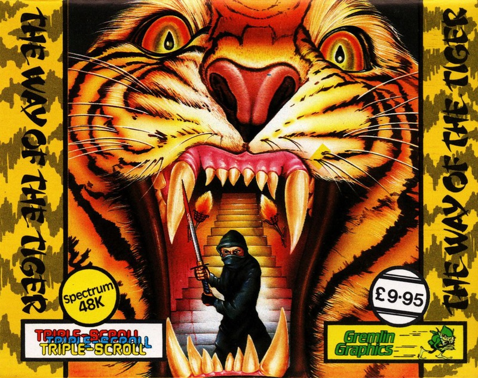
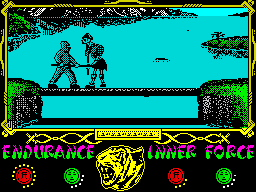
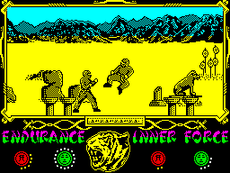
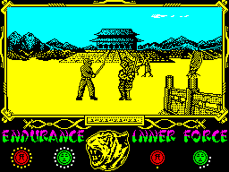

The Way of the Tiger


{kind=link}

| Publisher: | Gremlin Graphics |
| Price: | £9.95 |
| Year: | 1986 |
| Source: | CRASH, Issue 28 |

Abandoned as an orphan on the shores of the Island of Tranquil Dreams, you were adopted by an old monk — Naijishi, Grand Master of the Dawn. The monks on the island worship Kwon, the god of unarmed combat, and your adopted father has trained you in the martial arts — it’s a Ninja he wants to make of you, not just a man! Before becoming worthy of the noble title of Ninja you must pass three tests of endurance and skill in combat against opponents chosen by the Master. Tests of your skills in unarmed combat, pole fighting, and Samurai sword fighting await in Gremlin Graphics’ computerised version of the role playing adventure books.
The game comes on two cassettes, and a master program has to be loaded before the fighting can start. From the menu screen provided by the master loader you can opt to practise one of the three forms of combat or choose to take the full test, working your way through all three stages. Select keyboard or joystick, press the key to select an entry point in the game and load in the appropriate cassette to begin the fighting.

Cameron's got a new cupboard in the
photography room for all his expensive
equipment — wonder if he's got any
skeletons in it? Hmm...
An oriental tune introduces the action, which takes place on a large window on the screen. The status area gives a readout on Endurance and Inner Force levels, represented by circles at the bottom of the display. For every complete circle of Endurance used by a combatant, one point of Inner Force is deducted and the fighter who runs out of Inner Force first loses the contest. The opponents sent against you by the Master have different levels of Endurance and Inner Force as well as a variety of skills. As a fighter’s Inner Force wanes, the power of the blows he lands and the effect they have on his opponent is reduced.
The display system features a triple scroll effect, which allows three levels of animation on the screen and provides animated backdrops. The fighting takes place in the foreground and the middle and background animation areas are used for incidental action. Pole fighting, for instance, takes place on a pole perched on the banks of a river: logs float down the watercourse while ducks paddle about, occasionally taking to the air.

the first stage of the journey that takes
you on THE WAY OF THE TIGER. Are you
a desert fighting man?
In the first section of the game you find yourself wandering in the desolate desert land of Orb without a weapon. The Master has collected a range of opponents to pit against his trainee Ninja, and they are not all humanoid. He’s not averse to animating the odd rock or obelisk to test your skills. Anticipation mounts as you await the first opponent. Suddenly, a pointy-eared goblin jumps out from behind a rock — the battle is on! As in the other two sections of the game, control is effected in the usual beat em up manner, using eight directions in combination with fire to make a total of sixteen moves. Once the goblin is out of the way a floating spectre creeps up from behind and gradually zaps away your strength. Each time an opponent is despatched your status levels are topped up in readiness for the next fight. The contest continues until all the Master’s challengers have been defeated or you die. Simple, really!
Once the desert of Orb has been cleared of aggressive nasties, it’s on to the Pole Fighting section. Standing on a pole spanning a river, you’re suddenly confronted by an armour plated skeleton with a very nasty grin on its face. Armed with quarterstaffs you enter battle, attempting to wear each other’s Inner Force levels down to zero. The skeleton is not alone — once it has been despatched to the murky depths of the river whence it came, other pole fighters join the fray including another Ninja and a mean looking dwarf with a club.

— Samurai Sword Fighting.
Survival in the pole fighting leads to the Grand Temple and the final section of the game. The scene of the last test is majestic indeed. Snow-capped mountains rise to meet the sky on the horizon and the Temple appears behind you. Birds flutter overhead, labourers trundle wheelbarrows to and fro and all seems very peaceful until ... a mongolian sword fighter with an enormous knife in his hand jumps up. In Samurai Sword fighting the Master pits you against the greatest warriors he knows, some of whom can perform fighting feats which you simply can’t match. It’s possible to defeat the Master’s minions, but difficult...
If the swordsmen are all defeated, one further test remains — it’s time to confront the Grand Master himself. If you are able to prevent him from making mincemeat of your corpse you have truly have earned the right to be a Ninja, “speaker of wisdom, protector of the weak. One most powerful”.
The Way of the Tiger is a perilous way indeed...
CRITICISM
‘I am very impressed with this game. It is definitely the best beat em up to date, and any new fighting game will have to go a long way to better this. I can’t really fault Way of the Tiger in any way — there is plenty of action, it is very compelling and great fun to play. Graphically this game is second to none. Each of the many characters is well drawn and all their moves are excellently animated and very realistic. The backgrounds are all masterpieces in their own right, too. Sound is well used and there is a tuneette when you’ve minced your opponent and at the end of a screen. The only niggle one could possibly have with this one is that you have to load in the different parts of the program, but it is well worth the wait. I strongly recommend this game to everyone.’
‘I thought that these Karate type games were getting a bit monotonous now, but with the advent of Gremlin Graphics’ Way of the Tiger that has changed. The game itself has three distinct stages all of which are superbly executed. To avoid attribute problems most of the game is displayed in two colours, but with that said it is still visually appealing. The graphics themselves are detailed and probably the best featured in a game of this type. Watching someone else play the game is somewhat akin to watching a movie, there is action going on all the time and with the assorted effects happening in the background it all looks very convincing. As with most beat em ups, the game is instantly playable. The increasing difficulty of your opponents coupled with the three separate games make it very addictive. To my mind, Way of the Tiger is the best game yet from the Gremlin stable. Let’s hope that all the other Ninja games are as good as this.’
‘I didn’t much like the constant loading of the game but it does represent very good value for money. The animation of the characters is very well polished off and considering the characters are massive the speed is very fast. I was very impressed when I looked behind the speedy animation and found beautiful backgrounds and some neat touches like the ducks that constantly swim behind the action, and take off. Way of the Tiger gives new life to the beat em up games and takes over where Way of the Exploding Fist left off. I enjoyed playing Tiger more than Fist because there is a much harder challenge in it and more variation of play. Way of the Tiger gives a new challenge to all those people who said Fist was easy.’
COMMENTS
| Control keys: | W, E, D, C, X, Z, A and Q plus SPACE |
| Joystick: | Kempston |
| Keyboard play: | Responsive |
| Use of colour: | Mainly monochromatic |
| Graphics: | Very clever indeed |
| Sound: | A jolly tune |
| Skill levels: | Three fighting styles |
| General Rating: | An excellent development on the beat em up theme. |
| Use of Computer: | 92% |
| Graphics: | 94% |
| Playability: | 94% |
| Getting Started: | 93% |
| Addictive Qualities: | 93% |
| Value for Money: | 92% |
| Overall: | 93% |